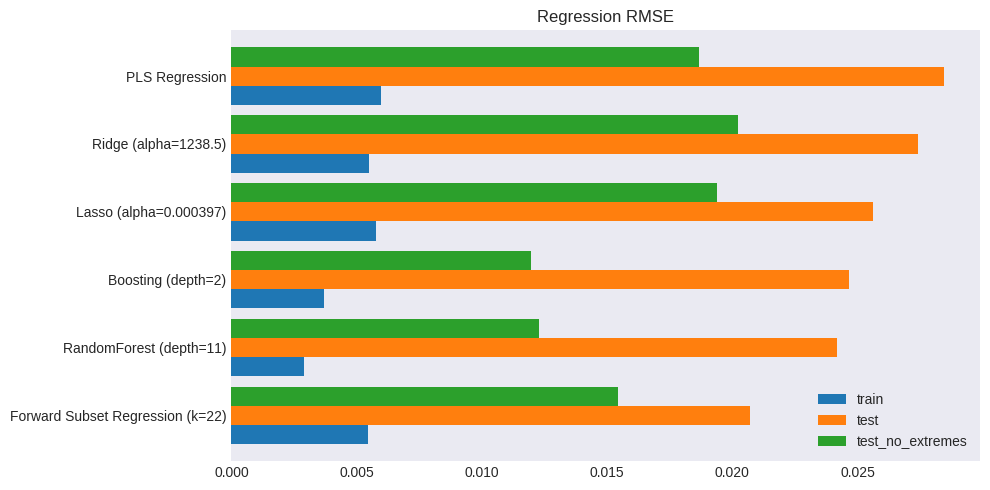

Regression for supervised learning#
UNDER CONSTRUCTION
subset selection, partial least squares, ridge, gradient boost, random forest
sklearn, statsmodels
import numpy as np
import pandas as pd
from pandas import DataFrame, Series
import matplotlib.pyplot as plt
from pandas.api.types import is_list_like, is_numeric_dtype
import statsmodels.api as sm
from sklearn.metrics import mean_squared_error
import time
from finds.readers.alfred import Alfred, fred_qd, fred_md
from finds.plots import plot_date
from finds.misc.show import Show
from secret import credentials, paths
# %matplotlib qt
VERBOSE = 0
show = Show(ndigits=4, latex=None)
imgdir = paths['images'] / 'regression'
alf = Alfred(api_key=credentials['fred']['api_key'], verbose=-1)
### Get FRED-MD INDPRO data
df, t = fred_md(202205)
transforms = t['transform']
### Splice in common updates: source of PE ratio, Commercial Paper
for col in ['S&P PE ratio', 'CP3M']:
df[col] = alf.splice(col)
df['COMPAPFF'] = df['COMPAPFF'].fillna(method='ffill') # forward fill 20200430
### Apply transformations
transformed = []
freq = 'M'
beg = 19640701 # 19620701
end = 20220331 # ignore 2020?
for col in df.columns:
transformed.append(alf.transform(df[col], tcode=transforms[col], freq=freq))
data = pd.concat(transformed, axis=1).iloc[2:]
c = list(data.columns)
data = data.loc[(data.index >= beg) & (data.index <= end)]
### Drop columns with missing data
missing = []
for series_id in df.columns:
g = data[series_id].notna()
missing.extend([(date, series_id) for date in data.index[~g]])
missing_per_row = data.isna().sum(axis=1)
missing = DataFrame.from_records(missing, columns=['date', 'series_id'])
print('original:', data.shape, 'dropna:', data.dropna(axis=1).shape)
data = data.dropna(axis=1) # drop columns where missing values
print(missing['series_id'].value_counts())
data
### Split time series train (througn 2017) and test set (17+ quarters)
target_id = 'INDPRO'
def ts_split(X, Y, end=20171231):
"""helper to split train/test time series"""
return X[Y.index<=end], X[Y.index>end], Y[Y.index<=end], Y[Y.index>end]
def columns_map(columns, lag):
return {col: col + '_' + str(lag) for col in columns}
def columns_unmap(columns):
cols = [col.split('_') for col in columns]
return [col[0] for col in cols], [int(col[1]) for col in cols]
lags = 3 # Include up to 3 lags of exogs
Y = data[target_id].iloc[lags:]
X = pd.concat([data.shift(lag).iloc[lags:]\
.rename(columns=columns_map(data.columns, lag))
for lag in range(1, lags+1)],
axis=1)
test = Series(name='test', dtype=float) # collect test and train errors
test_robust = Series(name='test_no_extremes', dtype=float)
train = Series(name='train', dtype=float)
final_models = {} # collect final fitted models
monthly/2022-05.csv
original: (693, 127) dropna: (693, 122)
series_id
CP3M 393
ACOGNO 332
UMCSENT 163
TWEXAFEGSMTH 103
ANDENO 44
Name: count, dtype: int64
Forward Selection#
def forward_select(Y, X, selected, ic='aic'):
"""helper to forward select next regressor, using sm.OLS"""
remaining = [x for x in X.columns if x not in selected]
results = []
for x in remaining:
r = sm.OLS(Y, X[selected + [x]]).fit()
results.append({'select': x,
'aic': r.aic,
'bic': r.bic,
'rsquared': r.rsquared,
'rsquared_adj': r.rsquared_adj})
return DataFrame(results).sort_values(by=ic).iloc[0].to_dict()
### split train/test and forward select
X_train, X_test, Y_train, Y_test = ts_split(X, Y)
tic = time.time()
selected = []
models = {}
### find best bic, and show selection criteria scores
ic = 'bic' # select by information criterion
for i in range(1, 32):
select = forward_select(Y_train,
X_train,
selected,
ic=ic)
models.update({i: select})
selected.append(select['select'])
selected = DataFrame.from_dict(models, orient='index')
best = selected[[ic]].iloc[selected[ic].argmin()]
subset = selected.loc[:best.name].round(3)
subset.index = [alf.header(s.split('_')[0]) for s in subset['select']]
show(subset, caption='Forward Selection Subset', max_colwidth=60)
DataFrame.from_dict({n: {'series_id': s.split('_')[0],
'lag' : s.split('_')[1],
'description': alf.header(s.split('_')[0])}
for n, s in selected.loc[:best.name, 'select'].items()},
orient='index').set_index('series_id')
### Plot BIC vs number selected
fig, ax = plt.subplots(num=1, clear=True, figsize=(5, 3))
selected['bic'].plot(ax=ax, c='C0')
selected['aic'].plot(ax=ax, c='C1')
ax.plot(best.name, float(best.iloc[0]), "ob")
ax.legend(['BIC', 'AIC', f"best={best.name}"], loc='upper left')
ax.set_title(f"Forward Subset Selection with {ic.upper()}")
bx = ax.twinx()
selected['rsquared'].plot(ax=bx, c='C2')
selected['rsquared_adj'].plot(ax=bx, c='C3')
bx.legend(['rsquared', 'rsquared_adj'], loc='upper right')
bx.set_xlabel('# Predictors')
plt.tight_layout()
plt.savefig(imgdir / 'forward.jpg')
### evaluate train and test mse
X_subset = X_train[subset['select']]
model = sm.OLS(Y_train, X_subset).fit()
name = f"Forward Subset Regression (k={len(subset)})"
Y_pred = model.predict(X_test[subset['select']])
test[name] = mean_squared_error(Y_test, Y_pred)
robust = Y_test.abs() < 2.33 * np.std(Y_test)
test_robust[name] = mean_squared_error(Y_test[robust], Y_pred[robust])
train[name] = mean_squared_error(Y_train, model.predict(X_subset))
final_models[name] = model
fig, ax = plt.subplots(figsize=(10,6))
plot_date(pd.concat([Y_test, Y_pred], axis=1),
legend1=[target_id, 'Test Prediction'],
title=name,
xlabel='Test Period',
fontsize=8,
ax=ax)
plt.tight_layout()
plt.savefig(imgdir / 'forward_test.jpg')
DataFrame({'name': name,
'train': np.sqrt(train[name]),
'test_robust': np.sqrt(test_robust[name]),
'test': np.sqrt(test[name])}, index=['RMSE'])
| name | train | test_robust | test | |
|---|---|---|---|---|
| RMSE | Forward Subset Regression (k=22) | 0.005459 | 0.015444 | 0.020698 |
Partial Least Squares Regression#
### - split train and test, fit standard scaling using train set
from sklearn.preprocessing import StandardScaler
from sklearn.cross_decomposition import PLSRegression
from sklearn.model_selection import cross_val_score, KFold
X_train, X_test, Y_train, Y_test = ts_split(X, Y)
scale = StandardScaler().fit(X_train)
X_train = scale.transform(X_train)
X_test = scale.transform(X_test)
### fit with 5-fold CV to choose n_components
n_splits=5
kf = KFold(n_splits=n_splits, shuffle=True, random_state=0)
mse = Series(dtype=float)
for i in np.arange(1, 31):
pls = PLSRegression(n_components=i)
score = cross_val_score(estimator=pls,
X=X_train,
y=Y_train,
n_jobs=-1,
verbose=VERBOSE,
cv=kf,
scoring='neg_mean_squared_error').mean()
mse.loc[i] = -score
### show CV results and best model
fig, ax = plt.subplots(clear=True, num=1, figsize=(5, 3))
mse.plot(ylabel='Mean Squared Error',
xlabel='Number of Components',
title=f"PLS Regression with {n_splits}-fold CV",
ax=ax)
best = mse.index[mse.argmin()]
ax.plot(best, mse.loc[best], "or")
ax.legend(['MSE', f"best={best}"])
plt.tight_layout()
plt.savefig(imgdir / 'pls.jpg')
### evaluate train and test mse
model = PLSRegression(n_components=best).fit(X_train, Y_train)
name = f"PLS Regression"
Y_pred = Series(index=Y_test.index,
data=model.predict(X_test).reshape((-1,)))
test[name] = mean_squared_error(Y_test, Y_pred)
robust = Y_test.abs() < 2.33 * np.std(Y_test)
test_robust[name] = mean_squared_error(Y_test[robust], Y_pred[robust])
train[name] = mean_squared_error(Y_train, model.predict(X_train))
final_models[name] = model
fig, ax = plt.subplots(figsize=(10,6))
plot_date(pd.concat([Y_test, Y_pred], axis=1),
legend1=[target_id, 'Test Prediction'],
title=name,
xlabel='Test Period',
fontsize=8,
ax=ax)
plt.tight_layout()
plt.savefig(imgdir / 'pls_test.jpg')
DataFrame({'name': name,
'train': np.sqrt(train[name]),
'test_robust': np.sqrt(test_robust[name]),
'test': np.sqrt(test[name])}, index=['RMSE'])
#
| name | train | test_robust | test | |
|---|---|---|---|---|
| RMSE | PLS Regression | 0.00597 | 0.018655 | 0.028461 |
Ridge Regression#
from sklearn.linear_model import Ridge, RidgeCV
from sklearn.pipeline import Pipeline
alphas = 10**np.linspace(8, -4, 100)*0.5 # for parameter tuning
X_train, X_test, Y_train, Y_test = ts_split(X, Y)
scale = StandardScaler().fit(X_train)
X_train = scale.transform(X_train)
X_test = scale.transform(X_test)
np.random.seed(42)
### Plot fitted coefficients vs regularization alpha
coefs = [Ridge(alpha, fit_intercept=False)\
.fit(X_subset, Y_train).coef_ for alpha in alphas]
fig, ax = plt.subplots(num=1, clear=True, figsize=(5, 3))
ax.plot(alphas, coefs)
ax.set_xscale('log')
ax.set_xlabel('value of alpha regularization parameter')
ax.set_title('Ridge Regression fitted coefficients')
plt.tight_layout()
plt.savefig(imgdir / 'ridge.jpg')
### RidgeCV LOOCV
model = RidgeCV(alphas=alphas,
scoring='neg_mean_squared_error',
cv=None, # to use Leave-One-Out cross validation
store_cv_values=True).fit(X_train, Y_train)
name = f"Ridge (alpha={model.alpha_:.1f})"
Y_pred = Series(index=Y_test.index,
data=model.predict(X_test).reshape((-1,)))
test[name] = mean_squared_error(Y_test, Y_pred)
robust = Y_test.abs() < 2.33 * np.std(Y_test)
test_robust[name] = mean_squared_error(Y_test[robust], Y_pred[robust])
train[name] = mean_squared_error(Y_train, model.predict(X_train))
final_models[name] = model
fig, ax = plt.subplots(figsize=(10,6))
plot_date(pd.concat([Y_test, Y_pred], axis=1),
legend1=[target_id, 'Test Prediction'],
title=name,
xlabel='Test Period',
fontsize=8,
ax=ax)
plt.tight_layout()
plt.savefig(imgdir / 'ridge_test.jpg')
DataFrame({'name': name,
'train': np.sqrt(train[name]),
'test_robust': np.sqrt(test_robust[name]),
'test': np.sqrt(test[name])}, index=['RMSE'])
| name | train | test_robust | test | |
|---|---|---|---|---|
| RMSE | Ridge (alpha=1238.5) | 0.005482 | 0.020216 | 0.027426 |

Lasso Regression#
from sklearn.linear_model import Lasso, LassoCV
alphas = 10**np.linspace(-2, -9, 100)*0.5 # for parameter tuning
X_train, X_test, Y_train, Y_test = ts_split(X, Y)
scale = StandardScaler().fit(X_train)
X_train = scale.transform(X_train)
X_test = scale.transform(X_test)
### Plot fitted coefficients vs regularization
coefs = [Lasso(max_iter=10000, alpha=alpha)\
.fit(X_subset, Y_train).coef_ for alpha in alphas]
fig, ax = plt.subplots(num=3, clear=True, figsize=(5, 3))
ax.plot(alphas, coefs)
ax.set_xscale('log')
ax.set_xlabel('value of alpha regularization parameter')
ax.set_title('Lasso fitted coefficients')
plt.tight_layout()
plt.savefig(imgdir / 'lasso.jpg')
### LassoCV 10-Fold CV
model = LassoCV(alphas=None,
cv=10,
n_jobs=-1,
verbose=VERBOSE,
max_iter=10000).fit(X_train, Y_train)
name = f"Lasso (alpha={model.alpha_:.3g})"
Y_pred = Series(index=Y_test.index,
data=model.predict(X_test).reshape((-1,)))
test[name] = mean_squared_error(Y_test, Y_pred)
robust = Y_test.abs() < 2.33 * np.std(Y_test)
test_robust[name] = mean_squared_error(Y_test[robust], Y_pred[robust])
train[name] = mean_squared_error(Y_train, model.predict(X_train))
final_models[name] = model
fig, ax = plt.subplots(figsize=(10,6))
plot_date(pd.concat([Y_test, Y_pred], axis=1),
legend1=[target_id, 'Test Prediction'],
title=name,
xlabel='Test Period',
fontsize=8,
ax=ax)
plt.tight_layout()
plt.savefig(imgdir / 'lasso_test.jpg')
DataFrame({'name': name,
'train': np.sqrt(train[name]),
'test_robust': np.sqrt(test_robust[name]),
'test': np.sqrt(test[name])}, index=['RMSE'])
### Display nonzero coefs
nonzero = np.sum(np.abs(model.coef_) > 0)
argsort = np.flip(np.argsort(np.abs(model.coef_)))[:nonzero]
df = DataFrame({'series_id': columns_unmap(X.columns[argsort])[0],
'lags': columns_unmap(X.columns[argsort])[1],
'desc': [alf.header(s)
for s in columns_unmap(X.columns[argsort])[0]],
'coef': model.coef_[argsort]}).round(6).set_index('series_id')
show(df, max_colwidth=70, caption="Lasso: Nonzero Coefficients")
/home/terence/env3.11/lib/python3.11/site-packages/sklearn/linear_model/_coordinate_descent.py:617: ConvergenceWarning: Objective did not converge. You might want to increase the number of iterations. Duality gap: 3.939433662976735e-06, tolerance: 3.06196989500973e-06
model = cd_fast.enet_coordinate_descent_gram(
/home/terence/env3.11/lib/python3.11/site-packages/sklearn/linear_model/_coordinate_descent.py:617: ConvergenceWarning: Objective did not converge. You might want to increase the number of iterations. Duality gap: 4.275721962663029e-06, tolerance: 3.2902038096105723e-06
model = cd_fast.enet_coordinate_descent_gram(
/home/terence/env3.11/lib/python3.11/site-packages/sklearn/linear_model/_coordinate_descent.py:617: ConvergenceWarning: Objective did not converge. You might want to increase the number of iterations. Duality gap: 4.9042555804960225e-06, tolerance: 3.06196989500973e-06
model = cd_fast.enet_coordinate_descent_gram(
| lags | desc | coef | |
|---|---|---|---|
| Lasso: Nonzero Coefficients | |||
| NDMANEMP | 1 | All Employees, Nondurable Goods | 0.0008 |
| CLAIMS | 1 | Initial Claims | -0.0006 |
| CES2000000008 | 1 | Average Hourly Earnings of Production and Nons... | 0.0006 |
| S&P div yield | 2 | S&P's Composite Common Stock: Dividend Yield | -0.0005 |
| USTRADE | 1 | All Employees, Retail Trade | 0.0005 |
| IPNMAT | 3 | Industrial Production: Non-Durable Goods Mater... | 0.0005 |
| AAA | 1 | Moody's Seasoned Aaa Corporate Bond Yield | 0.0005 |
| CES1021000001 | 3 | All Employees, Mining, Quarrying, and Oil and ... | -0.0004 |
| EXCAUS | 3 | Canadian Dollars to U.S. Dollar Spot Exchange ... | -0.0004 |
| S&P: indust | 3 | S&P's Common Stock Price Index: Industrials | 0.0004 |
| TB3SMFFM | 1 | 3-Month Treasury Bill Minus Federal Funds Rate | 0.0004 |
| USGOOD | 1 | All Employees, Goods-Producing | 0.0004 |
| IPBUSEQ | 2 | Industrial Production: Equipment: Business Equ... | 0.0003 |
| AWOTMAN | 2 | Average Weekly Overtime Hours of Production an... | 0.0003 |
| ISRATIO | 2 | Total Business: Inventories to Sales Ratio | -0.0003 |
| PERMITMW | 1 | New Privately-Owned Housing Units Authorized i... | 0.0003 |
| T1YFFM | 1 | 1-Year Treasury Constant Maturity Minus Federa... | 0.0003 |
| HWIURATIO | 1 | Ratio of Help Wanted/No. Unemployed | 0.0002 |
| RETAIL | 2 | Retail and Food Services Sales | 0.0002 |
| M2REAL | 3 | Real M2 Money Stock | 0.0002 |
| INDPRO | 3 | Industrial Production: Total Index | 0.0001 |
| IPMANSICS | 3 | Industrial Production: Manufacturing (SIC) | 0.0001 |
| UNRATE | 1 | Unemployment Rate | -0.0001 |
| CES1021000001 | 1 | All Employees, Mining, Quarrying, and Oil and ... | 0.0001 |
| BAA | 2 | Moody's Seasoned Baa Corporate Bond Yield | -0.0001 |
| IPDMAT | 1 | Industrial Production: Durable Goods Materials | 0.0001 |
| BAA | 3 | Moody's Seasoned Baa Corporate Bond Yield | -0.0001 |
| T5YFFM | 3 | 5-Year Treasury Constant Maturity Minus Federa... | 0.0001 |
| PERMITMW | 2 | New Privately-Owned Housing Units Authorized i... | 0.0001 |
| VIXCLS | 2 | CBOE Volatility Index: VIX | -0.0001 |
| PCEPI | 1 | Personal Consumption Expenditures: Chain-type ... | 0.0001 |
| HOUSTMW | 1 | New Privately-Owned Housing Units Started: Tot... | 0.0001 |
| UEMP5TO14 | 3 | Number Unemployed for 5-14 Weeks | -0.0001 |
| IPMAT | 3 | Industrial Production: Materials | 0.0001 |
| TB3MS | 2 | 3-Month Treasury Bill Secondary Market Rate, D... | 0.0001 |
| TB6MS | 1 | 6-Month Treasury Bill Secondary Market Rate, D... | 0.0000 |
| UEMPLT5 | 1 | Number Unemployed for Less Than 5 Weeks | -0.0000 |
| USWTRADE | 1 | All Employees, Wholesale Trade | 0.0000 |
| HWI | 3 | Help Wanted Index for United States | 0.0000 |
Gradient boost#
from sklearn.ensemble import GradientBoostingRegressor
X_train, X_test, Y_train, Y_test = ts_split(X, Y)
scale = StandardScaler().fit(X_train)
X_train = scale.transform(X_train)
X_test = scale.transform(X_test)
### tune max_depth with 5-fold CV
n_splits=5
kf = KFold(n_splits=n_splits, shuffle=True, random_state=0)
mse = Series(dtype=float)
for i in range(1, 10): # tune max_depth for best performance
boosted = GradientBoostingRegressor(max_depth=i, random_state=0)
score = cross_val_score(boosted,
X_train,
Y_train,
cv=kf,
n_jobs=-1,
verbose=VERBOSE,
scoring='neg_mean_squared_error').mean()
mse.loc[i] = -score
fig, ax = plt.subplots(clear=True, num=1, figsize=(5, 3))
mse.plot(ax=ax, ylabel='Mean Squared Error', xlabel='max depth',
title=f"Gradient Boosting Regressor with {n_splits}-fold CV")
best = mse.index[mse.argmin()]
ax.plot(best, mse.loc[best], "or")
ax.legend(['mse', f"best={best}"])
plt.tight_layout()
plt.savefig(imgdir / 'boosting.jpg')
### evaluate train and test MSE
name = f"Boosting (depth={best})"
model = GradientBoostingRegressor(max_depth=best,
random_state=0).fit(X_train, Y_train)
Y_pred = Series(index=Y_test.index,
data=model.predict(X_test).reshape((-1,)))
test[name] = mean_squared_error(Y_test, Y_pred)
robust = Y_test.abs() < 2.33 * np.std(Y_test)
test_robust[name] = mean_squared_error(Y_test[robust], Y_pred[robust])
train[name] = mean_squared_error(Y_train, model.predict(X_train))
final_models[name] = model
fig, ax = plt.subplots(figsize=(10,6))
plot_date(pd.concat([Y_test, Y_pred], axis=1),
legend1=[target_id, 'Test Prediction'],
title=name,
xlabel='Test Period',
fontsize=8,
ax=ax)
plt.tight_layout()
plt.savefig(imgdir / 'boosting_test.jpg')
DataFrame({'name': name,
'train': np.sqrt(train[name]),
'test_robust': np.sqrt(test_robust[name]),
'test': np.sqrt(test[name])}, index=['RMSE'])
### Show feature importance
top_n = 10
imp = Series(model.feature_importances_, index=X.columns).sort_values()
show(DataFrame.from_dict({i+1: {'importance': imp[s],
'series_id': s.split('_')[0],
'lags': s.split('_')[1],
'description': alf.header(s.split('_')[0])}
for i, s in enumerate(np.flip(imp.index[-top_n:]))},
orient='index'),
max_colwidth=70, caption="Gradient Boosting: Feature Importances")
| importance | series_id | lags | description | |
|---|---|---|---|---|
| Gradient Boosting: Feature Importances | ||||
| 1 | 0.0709 | USGOOD | 1 | All Employees, Goods-Producing |
| 2 | 0.0501 | CMRMTSPL | 2 | Real Manufacturing and Trade Industries Sales |
| 3 | 0.0439 | IPNMAT | 1 | Industrial Production: Non-Durable Goods Mater... |
| 4 | 0.0386 | M2REAL | 3 | Real M2 Money Stock |
| 5 | 0.0342 | UNRATE | 1 | Unemployment Rate |
| 6 | 0.0300 | HWIURATIO | 1 | Ratio of Help Wanted/No. Unemployed |
| 7 | 0.0271 | DMANEMP | 1 | All Employees, Durable Goods |
| 8 | 0.0255 | ISRATIO | 2 | Total Business: Inventories to Sales Ratio |
| 9 | 0.0254 | NDMANEMP | 1 | All Employees, Nondurable Goods |
| 10 | 0.0245 | HWIURATIO | 3 | Ratio of Help Wanted/No. Unemployed |
Random Forest#
from sklearn.ensemble import RandomForestRegressor
X_train, X_test, Y_train, Y_test = ts_split(X, Y)
### tune max_depth with 5-fold CV
n_splits=5
kf = KFold(n_splits=n_splits,
shuffle=True,
random_state=0)
mse = Series(dtype=float)
for i in range(3, 20): #tune for best performance
model = RandomForestRegressor(max_depth=i, random_state=0)
score = cross_val_score(model,
X_train,
Y_train,
cv=kf,
n_jobs=-1,
verbose=VERBOSE,
scoring='neg_mean_squared_error').mean()
mse.loc[i] = -score
print(i, np.sqrt(abs(score)))
fig, ax = plt.subplots(clear=True, num=1, figsize=(5, 3))
mse.plot(ax=ax, ylabel='MSE', xlabel='max depth',
title=f"Random Forest Regressor with {n_splits}-fold CV")
best = mse.index[mse.argmin()]
ax.plot(best, mse.loc[best], "or")
ax.legend(['Mean Squared Error', f"best={best}"])
plt.tight_layout()
plt.savefig(imgdir / 'forest.jpg')
name = f"RandomForest (depth={best})"
model = RandomForestRegressor(max_depth=best,
random_state=0).fit(X_train, Y_train)
Y_pred = Series(index=Y_test.index,
data=model.predict(X_test).reshape((-1,)))
test[name] = mean_squared_error(Y_test, Y_pred)
robust = Y_test.abs() < 2.33 * np.std(Y_test)
test_robust[name] = mean_squared_error(Y_test[robust], Y_pred[robust])
train[name] = mean_squared_error(Y_train, model.predict(X_train))
final_models[name] = model
fig, ax = plt.subplots(figsize=(10,6))
plot_date(pd.concat([Y_test, Y_pred], axis=1),
legend1=[target_id, 'Test Prediction'],
title=name,
xlabel='Test Period',
fontsize=8,
ax=ax)
plt.tight_layout()
plt.savefig(imgdir / 'forest_test.jpg')
DataFrame({'name': name,
'train': np.sqrt(train[name]),
'test_robust': np.sqrt(test_robust[name]),
'test': np.sqrt(test[name])}, index=['RMSE'])
fig, ax = plt.subplots(num=1, clear=True, figsize=(10, 5))
pd.concat([np.sqrt(r.to_frame()) for r in [train, test, test_robust]], axis=1)\
.sort_values('test')\
.plot.barh(ax=ax, width=0.85)
ax.yaxis.set_tick_params(labelsize=10)
ax.set_title('Regression RMSE')
ax.figure.subplots_adjust(left=0.35)
plt.tight_layout()
plt.savefig(imgdir / 'rmse.jpg')
3 0.006658748700334789
4 0.006595819691834476
5 0.006554813834111895
6 0.006525145608947737
7 0.006498070117454981
8 0.0065098589283977635
9 0.006500171449029663
10 0.00651232983315365
11 0.006483624005866995
12 0.0065079602075351186
13 0.006498528900854759
14 0.006500489917980369
15 0.00649950719243888
16 0.006508985777345642
17 0.0065033396940369125
18 0.006504936979291603
19 0.00650865115862167
Feature Importances#
top_n = 10
imp = Series(model.feature_importances_, index=X.columns).sort_values()
show(DataFrame.from_dict({i+1: {'importance': imp[s],
'series_id': s.split('_')[0],
'lags': s.split('_')[1],
'description': alf.header(s.split('_')[0])}
for i, s in enumerate(np.flip(imp.index[-top_n:]))},
orient='index'),
max_colwidth=70, caption="Feature Importances with Random Forest")
| importance | series_id | lags | description | |
|---|---|---|---|---|
| Feature Importances with Random Forest | ||||
| 1 | 0.0510 | USGOOD | 1 | All Employees, Goods-Producing |
| 2 | 0.0351 | IPNMAT | 1 | Industrial Production: Non-Durable Goods Mater... |
| 3 | 0.0265 | UNRATE | 1 | Unemployment Rate |
| 4 | 0.0224 | M2REAL | 3 | Real M2 Money Stock |
| 5 | 0.0222 | MANEMP | 1 | All Employees, Manufacturing |
| 6 | 0.0185 | DMANEMP | 1 | All Employees, Durable Goods |
| 7 | 0.0180 | TB6SMFFM | 1 | 6-Month Treasury Bill Minus Federal Funds Rate |
| 8 | 0.0159 | CMRMTSPL | 2 | Real Manufacturing and Trade Industries Sales |
| 9 | 0.0158 | PAYEMS | 1 | All Employees, Total Nonfarm |
| 10 | 0.0141 | NDMANEMP | 1 | All Employees, Nondurable Goods |
RMSE’s#
# np.sqrt(train.rename('train').to_frame().join(test.rename('test')))\
fig, ax = plt.subplots(num=1, clear=True, figsize=(10, 5))
pd.concat([np.sqrt(r.to_frame()) for r in [train, test, test_robust]], axis=1)\
.sort_values('test')\
.plot.barh(ax=ax, width=0.85)
ax.yaxis.set_tick_params(labelsize=10)
ax.set_title('Regression RMSE')
ax.figure.subplots_adjust(left=0.35)
plt.tight_layout()
plt.savefig(imgdir / 'rmse.jpg')
#
# TODO
# 1. predict 5 years, raw (don't no extremes)
#
